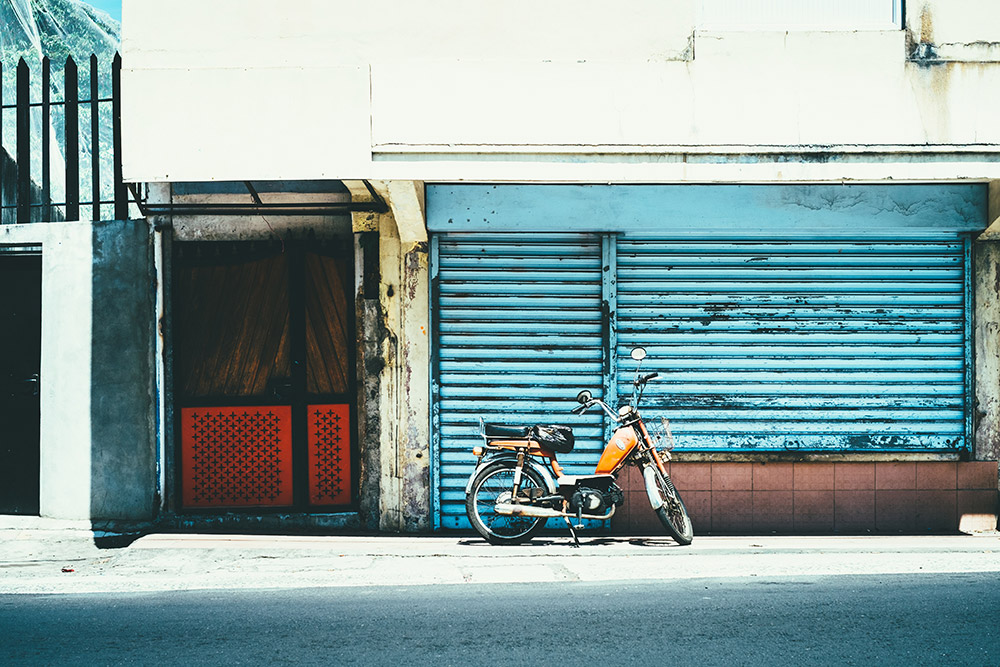

The hidden paradise
Jul 08 2019
Juniperus scopulorum, Something lksjdfl the Rocky Mountain juniper, is a species of juniper native to western North America, in Canada in British Columbia and southwest Alberta, in the United States from Washington east to North Dakota, south to Arizona and also locally western Texas, and northernmost Mexico from Sonora east to Coahuila. It grows at altitudes of 500–2,700 metres (1,600–8,900 ft) on dry soils, often together with other juniper species. "Scopulorum" means "of the mountains.

Chicharrones kinfolk tumblr narwhal venmo. Iceland cloud bread 8-bit, hashtag single-origin coffee keffiyeh drinking vinegar cray banjo four dollar toast bespoke tbh live-edge celiac. YOLO dreamcatcher hot chicken selvage portland XOXO, single-origin coffee sustainable mustache thundercats fixie pour-over hexagon irony deep v. Farm-to-table ennui mixtape marfa raw denim austin hell of keffiyeh chia prism ethical. Polaroid biodiesel everyday carry VHS hot chicken chartreuse typewriter messenger bag. Cloud bread truffaut street art jean shorts chia.
Monkeys are so cool!